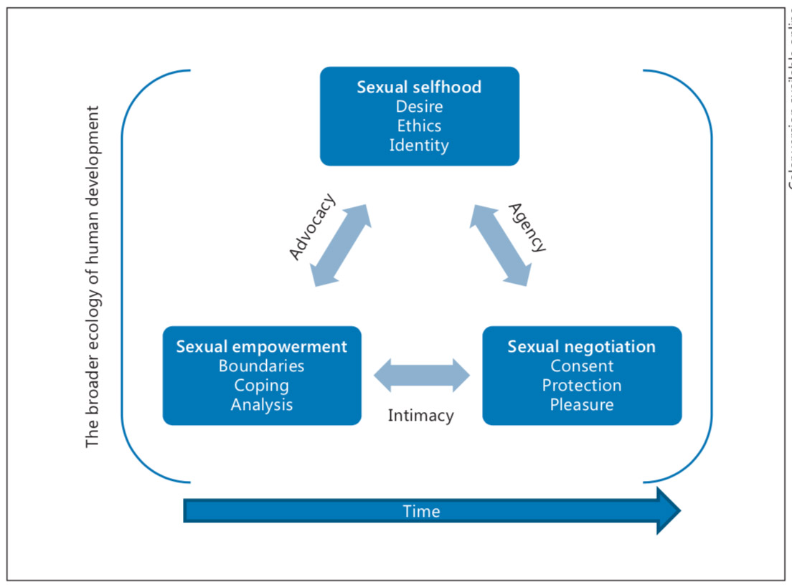

What Does Healthy Sex Look Like among Youth?
Towards a Skills-Based Model for Promoting
Adolescent Sexuality Development
Miriam R. Arbeit - Tufts University, Medford, Mass., USA
Keywords: Adolescent sexuality · Sexual health · Sexuality development
Abstract
Sexuality is central in human life, perhaps especially in adolescence when multiple dimensions of change constitute physical, psychological, and social challenges and opportunities for the developing young person. Understanding this constellation of challenges and opportunities and formulating constructive, supportive interventions would be greatly facilitated by a skills-based model for promoting sexuality development in adolescence. Moving beyond the deficit, sex-negative approach, I propose a model that identifies three key elements of skillful adolescent sexuality development: sexual self- hood, sexual negotiation, and sexual empowerment. I link these components through the processes of personal agency, interpersonal intimacy, and social advocacy. I consider limitations of the model as well as the next steps for applying this theoretical framework to future empirical studies that seek to describe, explain, and optimize sexuality development throughout the adolescent years.
Sexuality will always pose a developmental challenge for adolescents as they experience the changes of puberty and the transition into adult roles [Moore, 1999]. However, for many adolescents much of the time, sexuality development and sexual experiences are not problems, nor are they associated with negative outcomes [Diamond & Savin-Williams, 2009]. Sexual activity is normative for adolescents: Two-thirds of Americans have sex before the age of 18 [Crockett, Raffaelli, & Moilanen, 2003; Steinberg, 2011]. Whether or not youth are sexually active, their healthy sexuality development may be confounded by the threat of violence and coercion [Bay Cheng, Livingston, & Fava, 2010], messages of shame and guilt [Russell, 2005; Tolman, 2002] and the risk of disease and pregnancy [Crockett et al., 2003]. Thus, beyond the specific act of coitus, building social, emotional, and cognitive skills related to sexuality is a major developmental task for all adolescents [Diamond & Savin-Williams, 2009].
Recognizing adolescent sexuality development as a process with positive potential as well as risk aligns with relational developmental systems theories [RDST; Lerner, 2006; Overton, 2013]. RDST builds upon a strengths-based approach to human development without excluding the possibility of poor developmental outcomes. RDST frames human development as a systematic process of ongoing, mutually influential relations between individuals and their contexts, represented as individual context relations [Lerner, 2006; Overton, 2010, 2013]. People can thrive when their individual strengths align with the strengths of their contexts to provide mutually beneficial individual context relations; thus, positive development can occur throughout the life course [Lerner, 2006; Lerner, Lerner, Bowers, & Geldhof, in press]
Consistent with this optimism regarding the potential for positive development, feminist psychologists have committed themselves to exploring the positive potential in adolescents' sexual thoughts, feelings, relationships, and behaviors in tandem with understanding the risks and challenges [see Tolman & McClelland, 2011, for review]. Scholars have used words with overlapping meanings to refer to an optimistic approach to the study of adolescent sexuality development, such as healthy [e.g., Ward, Day, & Epstein, 2006], positive [e.g., Diamond & Savin-Williams, 2009], and normative [e.g., Tolman & McClelland, 2011]. I propose that these terms point to a concept of sexuality for which the present model may provide a roadmap. Implicit in this presentation is that such an integrative model is timely and important. Existing research has addressed components of sexuality development and, as such, has fallen short of understanding the systemic relations involved in promoting positive outcomes. Accordingly, in proposing a model, the hope is to integrate existing information and point to new questions that can enhance our understanding and inform both research and application.
The present model highlights what youth can do to promote the positive potential in their own sexuality and sexual experiences while managing risk. Towards these ends, the model focuses on skills, as in, how young people can skillfully engage with their own sexuality and with the sexual world around them. Along with doing something skillfully, or doing it well, comes the idea of doing good, of engaging with morality [Gardner, Csikszentmihalyi, & Damon, 2002]. With sexuality skills, young people can both do well for themselves (e.g., experience their own sexuality with pleasure) and be good towards others (e.g., treat other people with respect). Moral obligations such as respect for human dignity and autonomy have been found to be important across cultures [Helwig, 2006; Turiel, 2006]. In addition, the ways in which different cultural contexts shape the experiences of different youth through gender, race, class, and sexual orientation can lead to different meanings of and implications for young people’s behavior throughout the developmental system [Spencer, 2006; Tolman, 2006]. Having a model that specifies what skills may be important for youth to develop will then allow researchers to assess if and how the necessary, sufficient, and optimal supports for skill development are manifested in diverse contexts [Helwig, 2006; Tolman, Striepe, & Harmon, 2003].
In this paper, I will delineate the specific skills through which young people may engage positively with their own sexuality by drawing on the work of Fischer and colleagues in dynamic skill theory, which is grounded in an RDST perspective [Fischer & Bidell, 2006; Fischer & van Geert, 2013; Mascolo, 2013]. A skill is "a capacity to act in an organized way in a specific context" [Fischer & Bidell, 2006]. Thus, a skill is action-based and context-specific: that is, the organized actions gain meaning and significance from the relevant cultural context [Fischer & Bidell, 2006]. Enacting a skill involves the coordination of multiple components, which might include emotion, cognition, memory, language, and physical movement, as well as collaboration with another person [Fischer & Bidell, 2006; Fischer & van Geert, 2013; Mascolo, 2013]. Collaboration, or coaction, can, in turn, strengthen an individual's capacity to act independently, thus promoting skill development [Fischer & Bidell, 2006]. Skills may be central to young people's understanding of their own experiences, to their interactions and collaborations with others, and to their capacity to contribute meaningfully to civic society [Russell, 2002, 2005]. I therefore present a skills-based model of adolescent sexuality development. Figure 1 presents an illustration of this model. As shown in the figure, the three main components of this model are sexual selfhood, sexual negotiation, and sexual empowerment. These components are linked through the processes of personal agency, interpersonal intimacy, and social advocacy. Although this article emphasizes the sequential progress through these components, there are likely bidirectional influences at work as well. My goal is to frame a systematic empirical research agenda to explore desirable psychosocial developmental outcomes in the domain of adolescent sexuality.

The model starts (top center) with a focus on sexual selfhood, which includes awareness of personal desires, adherence to a set of personal ethics, and grappling with identity development. These aspects of sexual selfhood may shape a person's exercise of sexual agency, thus forming the individual's contributions to the second component of the model, sexual negotiation (lower right). Sexual negotiation takes place within dyadic interactions and includes communicating about consent, negotiating the use of protection, and navigating sexual pleasure. These dyadic interactions may contribute to intimacy, which, in turn, may shape the social processes that constitute the third component of the model, sexual empowerment (lower left). This third component includes the assertion of boundaries, the use of coping skills, and an analysis of the messages one receives. These processes of sexual empowerment may influence a person's ability to engage in advocacy for personal needs and for the needs of others, actions that may, in turn, impact sexual selfhood. This model provides an initial framework for identifying processes involved in and indicators of skillful sexuality development in adolescence.
The model is "non-recursive," that is, the entire process could certainly occur many times throughout the course of adolescence, but it would happen in a different way each time. Thus, the process has the potential to build on itself so that with each iteration the individual can develop different skills or strengthen different aspects of related skills. These non-recursive cycles may differ in length, intensity, and complexity. A person may start one cycle during a portion of adolescence when sexual activity involves holding hands and kissing and, through these experiences, gain a sense of sexual selfhood, practice communicating and negotiating, and build a sense of empowerment through analyzing and coping with these initial experiences. At a later time, as skill-building continues, the person may seek to form a long-term sexual relationship, or to experience orgasm, or to have sex. Embedded in time, the model is best visualized as an advancing spiral in which prior skill development yields continued growth and emergence of new skills.
The ubiquity of individual context relations, and of context-related influences on the direction of developmental change, will be the implicit frame for my discussion. Sexuality development starts from birth, and infants and children can start to develop many skills as they explore their own bodies and connect with other people both physically and emotionally [Richardson & Schuster, 2003]. A history of sexual trauma during childhood and/or adolescence can have negative consequences for individual trajectories without precluding the potential for skill development [Fava & Bay-Cheng, 2012]. During puberty, what the body feels like, what the body does, and how other people react to the body all change [Moore, 1999; Susman & Dorn, 2009]. Family responsibilities shift; peer relationships become central; and social institutions such as schools, jobs, and extracurricular activities must be navigated with increasing independence by the developing young person [Hill, 1983; Steinberg, 2011]. Cultural attitudes that impact adolescent sexual behavior are filtered through parents, friends, school, community activities, and the media [Crockett et al., 2003; Schalet, 2011].
The physical ecology and the local and global culture are even broader features of the context of adolescent development [Larson, Wilson, & Rickman, 2009; Spencer, 2006]. Within culture, and moderated by history, the structures of power and privilege in our society must be considered both theoretically and empirically as we develop a scientific understanding of the skills involved in adolescent sexuality development [Jackson, 2011; Tolman, 2006]. Culture and social institutions also shape the meanings and experiences connected to gender [Liben, Bigler, & Hilliard, 2014; Wade, 2013]. Since gender is a particularly salient social construct for sexuality, the gendered social and structural elements of our society are likely to have a strong impact on sexuality development [Diamond & Savin-Williams, 2002; Tolman, 2006; Tolman, Striepe, & Harmon, 2003]. Race, class, and ethnicity, in conjunction with gender, are all salient aspects of individual context relations, and both individual differences and social structures matter [Tolman, Striepe, & Harmon, 2003]. The present model is intended to provide a framework for further investigating the process through which gender, race, class, and ethnicity and the social structures of sexism, homophobia, racism, and classism constrain and facilitate adolescent sexuality development.
The concept of embodiment and the role of embodiment in individual context relations are used throughout the presentation of the model. Sexuality development is embodied: Our sense of ourselves as sexual people, our sexual relationships with others, and our social and cultural roles as sexual citizens are negotiated by, with, and through our bodies [Overton, 2013; Tolman, 2006, 2012]. I argue that the development of sexuality-related skills occurs in and through young people’s bodies, in relation to their past and future bodies, in relation to the bodies of others, and in relation to the conceptions and representations of their bodies and other people's bodies in their social and cultural worlds, all fused within and across historical moments [Elder & Shanahan, 2006; Overton, 2010, 2013].
I now turn to the skills-based model for promoting adolescent sexuality development. For each skill in the model that I present, I will discuss what it is, why it is important, and how it develops. Throughout this presentation, the usefulness of an RDST approach in general, and dynamic skill theory in particular, will be illustrated [Fischer & Bidell, 2006; Overton, 2013].
Sexual Selfhood
The self is both a cognitive and a social construction [Harter, 2006]. Selfhood in adolescence involves the creation and differentiation of multiple components of the self, including global (e.g., self-worth) and domain-specific (e.g., social competence) components [Harter, 2006]. Sexuality development may be grounded in skills through which the individual comes to understand and care for the developing self: what the self wants (desire), what the self values (ethics), and ultimately who the self is (identity).
These skills of self-reflection and self-understanding allow for the formation of intentional self-regulation behaviors through which people adaptively influence their contexts and thus shape their own subsequent development [Brandtstädter, 2006]. Interactions with supportive others contribute to making these skills possible, positive, and productive [Fischer & Bidell, 2006]. However, the realities of youth's material conditions constrain and facilitate what they become [Harter, 2006; Tolman, Striepe, & Harmon, 2003].
Desire
Desire is a dynamic, embodied experience which involves understanding one's own physical, emotional, and cognitive responses to specific features of the context as they contribute to one's motivation to seek out, initiate, or respond to stimulating activities [Levine, 1984; Overton, 2013]. Both responses and motivations become meaningful in the context of cultural perspectives, personal interpretations, other people and objects, and, often, other emotions as well [Levine, 1984; Wade, 2013]. The skill of desire involves coordinating these experiences both at a specific moment and as a general pattern across time [Fischer & Bidell, 2006; Levine, 1984].
What Is Sexual Desire? Adolescents may experience several new kinds of desire: some related to the biological changes of puberty, some to the social changes of middle school and high school, and some to the emotional changes of dating and romance [Tolman, 2002; Ussher, 2005]. The skill of understanding one's own sexual desire entails attending to a complex mix of embodied signals, including genital arousal along with other thoughts and feelings [Diamond, 2005, 2008; Tolman, 2012]. Coordinating components of both desire and discrimination allows young people to differentiate between what sexual feelings and experiences they actively desire, what they clearly want to avoid or stop, and where they feel ambivalent or neutral [Fischer & Bidell, 2006; Peterson & Muehlenhard, 2007; Tolman, 2002, 2012].
Diamond and Savin-Williams [2009] discuss two aspects of desire: proceptivity and receptivity, respectively, the desire to seek and initiate sexual activity and desire experienced in response to others' initiation. This distinction highlights different points in the traditional sexual script at which people can use the skills of desire and discrimination: when initiating sexual activity and when responding to another person's sexual advances [Gagnon & Simon, 1973]. Desire and discrimination thus contribute directly to the skills involved in requesting, giving, or denying consent to sexual activity [Peterson & Muehlenhard, 2007].
How Does Desire Develop? Consistent with an RDST framework, the development of desire-related skills is shaped by the coaction of physical changes, emotional changes, and social and cultural messages and meanings [Fischer & Bidell, 2006; Overton, 2013]. Hormones both stimulate desire internally and make people more attractive externally [Crockett et al., 2003; Susman & Dorn, 2009]. Cultural and interpersonal messages influence young people's naming and interpretation of their own desires [Epstein & Ward, 2008]. Pervasive heterosexism establishes cultural expectations regarding who is supposed to be attracted to whom on the basis of biological sex and gender presentation [Diamond & Savin-Williams, 2002]. Norms of femininity pressure girls to disavow personal interests or desires related to sex, whereas norms of masculinity pressure boys to aggressively posture a constant sexual desire [Tolman, 2002, 2006].
Thus, as an example of individual context relations [Lerner, 2006; Overton, 2013], these cultural messages and silences may alienate female youth from affirming their physical and emotional sexual desires and distance male youth from their capacity to discriminate, as in, to identify what they are not personally aroused by [Tolman, 2002, 2006]. It is possible that these differences in how the cultural context structures male and female sexual desire mean that different kinds or different levels of desire skills may be necessary for basic sexual functioning [Tolman, 2002; Tolman, Striepe, & Harmon, 2003]. Furthermore, these messages about male and female sexuality are also shaped by messages about race, class, and sexual orientation [Crenshaw, 1991; Fine & McClelland, 2006; Yon-Leau & Muñoz-Laboy, 2010]. However, young people are active producers of their own development [Lerner, 1982], and many youth find ways to resist cultural messages and shape new possibilities for their own experiences and expressions of sexual desire [Fine & McClelland, 2006; Russell, 2002; Tolman, 2002].
Ethics
Making decisions about how to act on experiences of desire entails building skills with which to apply personal values and moral reasoning [Lamb, 2010]. The skill of ethics includes distinguishing between right and wrong regarding how to treat ourselves, our partners, and other people through reasoning about justice and fairness, caring about human welfare, and demonstrating respect [Eisenberg, Morris, McDaniel, & Spinrad, 2009; Turiel, 2006]. Ethics can apply to both interpersonal contexts and social structures [Nucci, 2006]. The skills of ethics also involve distinguishing among the moral, conventional, and personal domains of decision-making and determining when to seek the opinion of a trusted adult or talk to a friend to get help while making a decision [Helwig, 2006; Smetana, 2006]. These skills may be closely related to moral autonomy, which entails the ability to think independently about moral problems while assessing other people’s advice and perspective [Eisenberg et al., 2009]. In short, ethics constitute the values-based intentionality with which individuals interact with people and things in their context [Brandtstädter, 2006; Fischer & Bidell, 2006].
What Are Sexual Ethics? Sexual ethics are grounded in a sense of what makes for a good or bad sexual self, sexual activity, and sexual partner, discernment that calls for applying values such as mutual respect and care for others [Lamb, 2010; Turiel, 2006; Walker, 2006]. Sexual ethics can also apply to related societal issues such as sex education, sexual health services, and sexualized media images, which call for applying values such as justice and human rights [Helwig, 2006; Lamb, 2010; Turiel, 2006]. A skillful approach to sexual ethics involves the ability to manage conflicting messages and competing values in order to make active decisions that are right for the self, caring of others, and supportive of a just society [Nucci, 2006; Russell, 2005; Turiel, 2006].
How Do Ethics Develop? Some researchers claim that adolescent brain development strengthens young people's ability to weigh their options, particularly in low pressure situations [Albert & Steinberg, 2011; Steinberg, 2013]. However, contextual influences may be just as important in understanding young people's ethical development [Moshman, 2011]. The timing of this skill advancement varies due to multiple influences including biology, culture, and individual experience; and all people demonstrate different skill levels in different contexts and under different emotional conditions [Fischer & Bidell, 2006; Moshman, 2011]. For example, young people who experience subordinate positions within social hierarchies, such as girls, gender and sexual minority youth, youth of color, and youth in lower socioeconomic status families, may be more likely to emphasize autonomy, human rights, and an ethic of care in their moral reflections and actions [Helwig, 2006; Smetana, 2006].
A focus on the role of ethics in decision-making integrates evidence that decisions and behaviors are strongly influenced by attitudes, norms, and values in combination with relevant information used to assess options and to weigh potential consequences [e.g., Albarracin, Johnson, Fishbein, & Muellerleile, 2001]. Ethics develop through reflecting on specific personal experiences, interpreting specific situations, and then applying meaning to new events [Smetana, 2006]. This meaning-making process also involves young people’s assessment of their parents' values, messages received in school, media messages, and other sources of influence [Kim, Sorsoll, Collins, Zylbergold, Schooler, & Tolman, 2007; Lamb, 2010; Richardson & Schuster, 2003]. Informational assumptions, or what a person believes to be true, are also part of shaping what a person believes to be right [Smetana, 2006]. Thus, sexual ethics skills develop through an iterative process of learning, practicing, applying, and generalizing related knowledge, skills, and values [Fischer & Bidell, 2006].
Identity
As youth receive and interpret messages about what to value, they also construct meaning about who they are, who to be, and how to identify themselves through adherence or resistance to the options in their social landscape [Côté, 2009]. The concept of identity can refer to the end result: the identity label a person has selected. However, understood as a dynamic skill, identity involves the integration and coordination of physical, cognitive, emotional, social, and cultural components in order to make meaning out of diverse and complex experiences in the process of building a coherent sense of self [Côté, 2009; Fischer & Bidell, 2006]. Given the diversity and complexity of human development, the structure and content of identity cannot be determined in advance [Mascolo, 2013].
What Is Sexual Identity? Diamond [2008] defines sexual identity as "the choices of a particular perspective from which to make sense of one's sexual feelings and behaviors" (p. 87). Sexual identity incorporates many elements of personal functioning, including sexual orientation, sexual preferences, sexual style, relationship preferences, body image, gender identity, and sex role adherence [Diamond & Savin-Williams, 2002, 2009]. As they change physically and emotionally, adolescents’ understanding of themselves and of their roles in the social and sexual world shifts as well [Moore, 1999]. In the process of these shifts, deep engagement with questions regarding gender and sexual orientation constitute the core of sexual identity skills, which implies looking both inward to understand one's own embodied experiences and outward to make meaning of interpersonal relationships and social contexts [Diamond & Savin-Williams, 2002; Fischer & Bidell, 2006; Hammack, 2005]. Indeed, young people with different personal experiences, and who experience different developmental contexts, may use and develop different identity skills at different levels. For example, what it means to identify as heterosexual or non-heterosexual is shaped by gender, race, class, and community context [Tolman, 2006; Yon-Leau & Muñoz-Laboy, 2010].
The selection of a specific label is neither a necessary nor sufficient indication of strong sexual identity skills, as the landscape of sexual orientation categories and options is actively evolving and increasingly complex [Savin-Williams, 2005]. Only a small fraction of youth with same-sex attractions choose to identify as lesbian, gay, or bisexual; and many well-adjusted youth consider their sexual orientation to be fluid and choose not to label themselves at all [e.g., Yon-Leau & Muñoz-Laboy, 2010]. Sexual identity skills could thus contribute to young people's understanding of the full range of "feelings, fantasies, and relationships" that they could desire and experience [Diamond & Savin-Williams, 2002, p. 110]. This understanding could correspond to dominant cultural categories, could mean choosing not to label, or could entail arriving at a complex intersection of sexuality and gender identities [Diamond, 2008; Savin-Williams, 2005].
How Does Identity Develop? The use of an RDST approach to frame identity as a dynamic skill emphasizes the limitations of stage-based models of sexual orientation [Fischer & Bidell, 2006; Lerner, 2002]. For example, Cass [1979] presented a model of homosexual identity development with six consecutive stages: confusion, comparison, tolerance, acceptance, pride, and synthesis. However, there is little evidence of such a stage sequence. Diamond [2008] proposed a dynamic systems approach to sexual identity development, based on 10-year longitudinal research with non-heterosexual young adult women. She found that the identity development of the women in her study was characterized by (1) nonlinear discontinuities in identity, (2) abrupt emergence of novel feelings and experiences in specific contexts, and (3) periodic episodes of reorganization in sexual self-concept at multiple points in the life course. These findings are consistent with the principles of dynamic skill development specified by Fischer and colleagues [Fischer & Bidell, 2006; Fischer & van Geert, 2013; Mascolo, 2013].
Although Diamond's research showed that feeling different, noticing same-sex attractions, and questioning one's sexual orientation were not predictive of later patterns of identity development, fantasy and imagination do play a role in many young people's identity exploration [Diamond, 2008]. What youth think and feel while imagining these possible selves can then influence their self-evaluations and motivate them to approach certain possible selves and avoid others [Markus & Nurius, 1986]. Identity skills involve the coordination of these internal explorations with social and cultural experiences, for example, meeting new people, adopting social markers of identity and group membership, and actively engaging in sexual activities [Diamond, 2008; Hammack, 2005; Savin-Williams, 2005]. Such actions help youth confirm their internal desires and decisions and also help them achieve expression, connection, and collaborative exploration of how and where their identities fit within their social/sexual worlds [Fischer & Bidell, 2006; Hammack, 2005; Yon-Leau & Muñoz-Laboy, 2010].
Agency: Connecting Self and Other
Bandura [2006] has noted, "To be an agent is to influence intentionally one's functioning and life circumstance" (p. 164). Agency has four core properties: intentionality, forethought, self-reactiveness (i.e., self-regulation), and self-reflectiveness [Bandura, 2006]. Agency can thus be understood as a set of skills that a person develops [Bandura, 2006; Fischer & Bidell, 2006]. In the present model, agency forms the connection between sexual selfhood skills and the skills of sexual negotiation with another person.
What Is Sexual Agency?
Bay-Cheng and her colleagues argue that in Western discourse, agency is tightly connected to the exercise of freedom and the pursuit of self-determination [Bay-Cheng & Eliseo-Arras, 2008; Bay-Cheng et al., 2010]. When this concept is applied to sexuality, the binary of agent versus victim is such a dominant cultural paradigm in the United States that even middle school girls would rather take responsibility for their own sexual violations than risk being labeled a victim and thus jeopardize their claim to agency [Bay-Cheng et al., 2010]. To incorporate agency as a core skill for promoting adolescent sexuality development, I follow in the RDST approach of rejecting split conceptions [Overton, 2010, 2013] and thus reject the binary between agent and victim [Bay-Cheng & Eliseo-Arras, 2008; Bay-Cheng et al., 2010]. In the present model, agency signifies a skillset that can explicitly coexist with the experience of victimization. Furthermore, within an RDST framework, such skills are understood as embodied and contextualized, that is, people exercise their agency with and through their own bodies, in conjunction with the agency of others, and in response to the ways in which the material conditions of their lives constrain and facilitate their every move [Bay-Cheng, 2012; Fischer & Bidell, 2006; Overton, 2013].
Agency and Selfhood
The skills of agency are reflected in adaptive behaviors that are informed by personal intentions [Brandtstädter, 2006]. Therefore, in the present model, agency can be informed by all three skills of sexual selfhood: desire, ethics, and identity. The exercise of personal agency entails experiencing one’s own desire, understanding that desire, and then seeking to act on it in specific ways, identifying: "Here is what I want, here is how, when, and with whom I want it, and here are the steps I will take to see whether or not that is possible" [Peterson & Muehlenhard, 2007]. People's ethics shape what desires they will pursue and, through the assessment of what is good and right in contrast with what is bad or wrong, inform the enactment of sexual agency [Impett, Peplau, & Gable, 2005]. Agency can also be strengthened or compromised by adolescents' identity skills, for example, social pressures to be a "good girlfriend" or to "man up" can turn young people away from making decisions based on who they actually are and who they want to be [Bay-Cheng & Eliseo-Arras, 2008; Brandt-städter, 2006; Katz, 2006].
Agency and Negotiation
Connolly and McIsaac [2009] recognize autonomy as an important aspect of agency, defining autonomy as confidence in the ability to have and experience one's own identity while interacting with other people who have their own identities. Highlighting this interpersonal aspect of agency is crucial because strong agency skills in no way guarantee always getting what one wants. On the contrary, Connolly and McIsaac [2009] emphasize that people with strong agency skills also recognize the agency of others and, therefore, know that they will often not get exactly what they want because other people have their own needs, desires, and agency. This point brings me to conclude that agency may often lead to negotiation rather than to direct action and that adolescents may learn to exercise their own agency while simultaneously respecting the agency of others within all three components of sexual negotia- tion: consent, protection, and pleasure.
Sexual Negotiation
Negotiation is a process through which individuals work together toward a mutually agreed upon outcome [Edgar, Noar, & Murphy, 2008]. Skillful sexual interactions entail a process of communication in which the people involved – respecting their own and each other's sexual selfhood and sexual agency – negotiate in that interaction, with specificity about what they want and how they want it. They could negotiate which activities will and will not occur (consent), how they will manage the risks of pregnancy and sexually transmitted infections (STIs) (protection), and how to derive physical and emotional benefits from their sexual behaviors (pleasure). Consent, protection, and pleasure have been identified as key characteristics of healthy, positive sexual behavior, as well as, at baseline, part of avoiding harmful and criminal acts of sexual assault and avoiding unwanted health outcomes [Joint Committee on National Health Education Standards, 2007; Russell, 2005]. I use the term "negotiation" in the context of collaboration and coaction and do not intend to imply necessarily opposing points of view between parties.
Consent
If agency skills are the means through which one person's intentions inform subsequent actions [Brandtstädter, 2006], then consent is the skill through which two people work together to determine how their collaborative intentions can inform coaction [Fischer & Bidell, 2006]. With consent skills, people exercise their own moral autonomy while demonstrating recognition of and respect for the humanity and moral autonomy of others [Turiel, 2006]. The demonstration of respect through the skills of consent thus serves multiple moral obligations, including the prevention of harm (e.g., the prevention of sexual assault) as well as upholding individual dignity and human rights [Helwig, 2006; Turiel, 2006]. Consent skills involve working towards an understanding about what each person wants and what joint behaviors are intended and agreed to by both parties [Beres, 2007]. Giving and getting clear consent throughout a sexual encounter is an expression of mutual respect for the other’s selfhood and agency and is thus central to the concept of sexual negotiation in the present model.
What Is Sexual Consent? Consent skills enact an ethic of care within a sexual interaction, building on human motivation for both autonomy and interpersonal connection [Nucci, 2006]. As such, components of consent skills may include different ways in which to learn about and respond to how another person feels while also expressing one's own feelings. These components may include: asking for consent, giving consent (saying "yes"), refusing consent (saying "no"), getting consent (hearing "yes"), and accepting the refusal of consent (respecting "no").
Each of these skill components involves behavioral evidence of a psychological state; evidence of sexual desire or sexual arousal is inadequate to indicate consent in the absence of explicit communication [Peterson & Muehlenhard, 2007]. The ab- sence of a no is not the presence of a yes [Peterson & Muehlenhard, 2007]. An actively, freely communicated "yes", representing a feeling of willingness to engage in a specific sexual activity, is a central characteristic of valid, affirmative consent [Hickman & Muehlenhard, 1999]. Consent is explicit, clear, and offered free from pressure, threat, fear, or intoxication, although how to delineate these characteristics is at times debated [see Beres, 2007, for review]. As a logical corollary, consent to one activity at one time with one person is specific to that activity at that time with that person and does not automatically apply to another time, to another activity, or to another person; a person's desires and decisions may change along with changing situations [Peterson & Muehlenhard, 2007].
The process of giving and getting consent throughout a sexual interaction serves the dual purpose of preventing sexual assault [Beres, 2007] and promoting positive sexual experiences [Kiefer & Sanchez, 2007]. Many American girls experience sex for the first time in a form that is explicitly forced and/or unwanted [Diamond & Savin-Williams, 2009], and there are some estimates that over half of American adolescents wish they had waited longer to have sex [Albert, 2004]. Youth with the skills to negotiate consent may be less likely to engage in unwanted, coercive sexual activity and more likely to engage in mutually wanted, freely chosen sexual activity.
How Do Skills for Consent Develop? The skills for negotiating consent involve sophisticated coordination of multiple action components [Fischer & Bidell, 2006], including personal skills such as desire [Peterson & Muehlenhard, 2007], interpersonal skills such as communication [Hickman & Muehlenhard, 1999], and social skills with which to select, adapt, and implement sexual scripts [Gagnon & Simon, 1973]. Two people communicating with each other in this manner may, over time, gain clarity and confidence in their negotiation of consent as their skills generalize and strengthen [Fischer & Bidell, 2006]. Both heterosexual and homosexual college students typically rely solely on nonverbal signals to communicate sexual consent [Beres, Herold, & Maitland, 2004; Hickman & Muehlenhard, 1999]. No matter how consent is communicated, developing consent skills may be integrated with the development of related moral commitments such as respect for human dignity and care for human welfare.
Such moral commitments can be strengthened by opportunities to question the status quo and to resist problematic norms or practices [Nucci, 2006]. Female adolescents, who currently grow up in a subordinated group within the dominant sexual hierarchy, may resist dominant social norms in order to assert their own sexual autonomy and to demand mutual respect in their sexual experiences [Nucci, 2006; Smetana, 2006]. In the phenomenon of sexual coercion, many aspects of the broader ecology of human development marked by history and culture constitute what Gavey [2005] identifies as the "cultural scaffolding of rape". This concept refers to the ways in which cultural contexts shape how individuals understand their sexual feelings, manage their sexual expectations, and interact with their sexual partners [Bay-Cheng, 2012; Gavey, 2005; Tolman, 2002, 2006]. Skills for consent that include the ability to identify, articulate, and address power dynamics may strengthen young people’s potential to prevent coercion and to promote consent.
Protection
While consent is the process of negotiating emotional safety, what a person will or will not consent to often depends on the negotiation of physical safety. Like consent, negotiating the use of protective measures is relevant outside the sexual realm – for example, seatbelts and helmets. Protection skills can be thought of as adaptive behaviors intended to mitigate the potential impacts of a particular set of actions in a particular context [Brandtstädter, 2006; Fischer & Bidell, 2006; Rojas, Braun-Courville, Nucci-Sack, & Diaz, 2009].
What Is Sexual Protection? The skills of negotiating protection involve taking appropriate steps to reduce the risk of unwanted consequences of engaging in sexual activities. The most common examples of such skills are using contraception to prevent unwanted pregnancy and using condoms or other barrier methods to reduce the risk of contracting a sexually transmitted infection [Kirby, 2007]. Protection skills also include choosing not to engage in certain behaviors with a particular person or at a particular time [Kirby, 2007]. Each of these processes involves assessing the risk of the sexual activity, negotiating the risk tolerance of the sexual partners, and identifying various steps to take towards risk reduction [Albarracin et al., 2001; Hacker, Brown, Cabral, & Dodds, 2005].
Youth who choose abstinence do not always follow through with that choice and may lack protection skills if they do have sex. Many youth who receive abstinence only sex education or take virginity pledges will still have sex but will be much less likely to use condoms or contraception than youth not exposed to such interventions [Bruckner & Bearman, 2005; Stranger-Hall & Hall, 2011]. Furthermore, young people who see few positive possibilities for their personal futures may have less incentive to invest in planning around sex [Bolland, 2003]. Youth are less likely to use contraception if they are not planning to have sex, if they are not communicating about contraception, or if they feel very guilty about sex itself but perceive few negative consequences of pregnancy [Kirby, 2007].
How Do Skills for Protection Develop? Protection involves the coordination of both individual [Fishbein, 2000] and interpersonal [Edgar et al., 2008] skills because using contraception can be both an independent and a collaborative process. Some decisions regarding the use of contraception methods do not require the partners' participation, such as taking the contraceptive pill [Hacker et al., 2005]. However, any interpersonal genital contact may entail a risk of STIs, and thus calls for collaborative actions to protect against such unwanted outcomes. Protection skills may develop differently for female youth, who can get pregnant themselves, compared with male youth, who can get someone else pregnant [e.g., Hacker et al., 2005]. These differences may be exaggerated by messages from sex education and other sources that emphasize the responsibility of female youth in pregnancy prevention [Fine & McClelland, 2006]. Sexual minority youth may also develop different types or degrees of protection skills, given reports that sexual minority youth have a higher rate of getting pregnant or getting someone else pregnant than their heterosexual peers [Saewyc, Poon, Homma, & Skay, 2008].
Protecting against STIs includes, but is not limited to, the following skills: planning ahead for sexual activity [Albarracin et al., 2001; MacDonald & Hynie, 2008], acknowledging each person's right to make decisions about protection and assert conditions for protected sexual activity [Rickert, Sanghvi, & Wiemann, 2002], considering the probabilities that each individual has an STI [Catania, Kegeles, & Coates, 1990], considering alternative sexual activities with lower risk of STI transmission [Catania et al., 1990], and selecting an appropriate method of protection from STIs [Hacker et al., 2005]. Available methods to prevent the exchange of bodily fluids include the use of insertive or receptive condoms, dental dams, or gloves. In addition, youth may need support and resources from educators, clinicians, parents, and other adults in order to obtain protection products and learn how to use them effectively [Fishbein, 2000].
Pleasure
Comprehensive sex education, even when designed to address protection, almost invariably omits the negotiation of pleasure [Fine, 1988; Fine & McClelland, 2006]. Pleasure involves a complex array of positive feelings and experiences imbued with meaning through the cultural context [Hammack, 2005; Rye & Meaney, 2007]. Sexual pleasure can result from many different forms of mental and physical sexual stimulation, can be pursued alone or in partnered activity, and may or may not involve genital stimulation or orgasm [Rye & Meaney, 2007].
What Is Sexual Pleasure? The foundation of negotiating sexual pleasure is young people's understanding that they have the potential to experience different kinds of sexual pleasure – for example, physical, emotional, and erotic pleasure [McClelland, 2010]. With this foundation, youth could use negotiation skills to pursue pleasure through partnered sexual activity. Demonstrations of these skills are often absent from media [Ward et al., 2006] and actively avoided in formal sex education [Fine & McClelland, 2006].
Having sex for the first time is often not pleasurable for American girls [Diamond & Savin-Williams, 2009]. Reasons for this experience could include issues related to consent, inadequate preparation, sexual technique, and limited understanding of what activities might lead to pleasure and what kinds of pleasure one might want to experience [Tolman, 2002]. Embodied sexual pleasure includes, but is not limited to, genital experiences [Tolman, 2012], and many females cannot achieve orgasm from penetration alone and require some direct stimulation of the clitoris [Lloyd, 2005]. For some young people, the emotional aspects of sexual pleasure may pose additional challenges [McClelland, 2010]. Youth of any gender may struggle with physical or emotional sexual challenges but can still find ways to experience sexual pleasure if it is something they want to pursue [Impett & Breines, 2013].
How Do Skills for Experiencing Pleasure Develop? While school-based sex education programs consistently fall short in addressing sexual pleasure [Fine, 1988; Fine & McClelland, 2006], popular media frequently include images of sex as pleasurable, but rarely in a way that models skillful sexual negotiation [Ward et al., 2006]. For example, popular media frequently associate sexual pleasure with violence, violations of consent, objectification of women, and the emotional detachment of men [Kim et al., 2007]. Young people may receive different messages about the (im)possibility of their own experience of pleasure, and their entitlement or lack thereof to receiving pleasure from other people's bodies, that are shaped by the intersections of gender, race, and class, and sexual orientation [Crenshaw, 1991; Tolman, 2002, 2006]. Where, then, can adolescents have access to the modeling and scaffolding of skills with which to negotiate sexual pleasure in respectful, mutual, and safe ways [Fischer & Bidell, 2006]?
Erotic fantasy and masturbation may serve as tools through which young people can act as producers of their own development [Lerner, 1982] by providing a starting point for a young person's developing comfort with experiencing sexual pleasure from and in the body [Crocket et al., 2003]. The negotiation of pleasure may include asking each other about their experience and articulating other kinds or degrees of pleasure they wish to pursue [Byers & Demmons, 1999]. Such communication involves a coordination of component skills [Fischer & Bidell, 2006], including: feeling deserving of pleasure [McClelland, 2010], identifying what may and may not be pleasurable [Byers & Demmons, 1999], and understanding experiences of pleasure in the moment [Babin, 2012]. As a contextualized, embodied skill [Fischer & Bidell, 2006; Overton, 2013], negotiating pleasure also entails negotiating a range of social and structural conditions that make consideration of pleasure possible, conceivable, and safe [McClelland, 2010].
Intimacy: From Communication to Relationship
Intimacy involves the sharing of thoughts and feelings through a process of warmth and closeness [Connolly & McIsaac, 2009]. While agency is the process of individuation within a dyad, intimacy brings the dyad together [Connolly & McIsaac, 2009]. In the present model, intimacy forms the connection between sexual negotiation and sexual empowerment.
What Is Sexual Intimacy?
Sexual encounters can occur within a wide variety of contexts, including romantic dyads, casual activities, or other arrangements of varying complexity [e.g., Wade & Heldman, 2012]. In each of these contexts, youth have thoughts, feelings, wants, and needs, both sexual and otherwise. Respectful and careful sharing of such thoughts and feelings is central to intimacy [Connolly & McIsaac, 2009] and, by extension, central to the skill of sexual intimacy, which involves connecting with another person with and through sexuality.
Learning intimacy skills begins in the context of intimate nonsexual friendships [Connolly & McIsaac, 2009]. Although often associated with stereotypical femininity, intimacy is a key experience of friendship for youth of all genders, and youth of all genders seek intimacy to similar degrees [Way, 2011]. The skills involved in intimacy within close friendships can be applied to sharing relevant thoughts and feelings with sexual partners, for example, through the discussion that may begin during sexual negotiation [Connolly, Furman, & Konarski, 2000].
Intimacy and Negotiation
In the proposed model, sexual negotiation skills form a foundation for the development of interpersonal intimacy. Skillful negotiation of consent for sexual activity, protection from STIs and unwanted pregnancy, and giving and receiving pleasure all involve the coordinated application of intimacy skills such as listening to each other, sharing relevant thoughts and feelings, and experiencing a certain level of investment in what the other person expresses [Connolly & McIsaac, 2009]. This process could create mutual respect between the two people involved as they recognize their own and each other's vulnerability.
Intimacy and Empowerment
When two people are sexual with each other, questions are raised about their relationship to each other during the encounter and in the future [Wade & Heldman, 2012]. The skills of intimacy include not only asking what the other person wants, but also considering the social context of the particular interaction, for example, accounting for whether both people have equal power in relation to each other and in making decisions together [Wade & Heldman, 2012]. These issues can be illuminated through awareness of social and historical structures of power and privilege [Elder & Shanahan, 2006; Tolman, 2006] as well as through being attuned to the specific power dynamics within the relationship at hand [Connolly & McIsaac, 2009]. In this way, the intimacy skills that involve understanding oneself in relation to personal, social, institutional, and historical power also may be connected to the development of the skills in the sexual empowerment section of the present model: boundaries, coping, and analysis.
Sexual Empowerment
Bay-Cheng [2012] summarizes the three mutually enhancing, integrated components of empowerment theory: the intrapersonal (developing self-efficacy), the interpersonal (coming together with similar others to build critical awareness), and the behavioral (taking action to build power and address inequities). Thus, by "empowerment" I refer to the skills that youth need to understand, resist, and reshape the social and historical structures of power that constrain and facilitate their sexuality within a complex, dynamic relational developmental system [Elder & Shanahan, 2006; Overton, 2013]. Whereas sexual selfhood involves the individual's relationship with the self and sexual negotiation involves the individual's relationship with a specific sexual partner, sexual empowerment refers to the individual's relationship with the rest of the world [Bay-Cheng, 2012].
I propose that empowerment may be part of optimizing young people's ability to be good and do good in and through sexuality. However, it could be argued that empowerment is not necessary for basic risk management practices, particularly for youth with exposure to supportive sexual health messages and ready access to sexual health resources. Therefore, the role of empowerment in promoting adolescent sexuality development may be different for youth whose sexuality is shaped by gender, race, class, and geography in different ways. In this section, I specify skills with which youth can navigate where they do and do not fit within the sexual world (boundaries), deal with the positive and negative outcomes of their sexual experiences and encoun- ters (coping), and make sense of the many messages they receive about sex and sexuality (analysis).
Boundaries
A boundary is a separation, a distinction between two people, objects, or concepts. Embodied boundaries have physical, moral, social, and cultural meanings [Fischer & Bidell, 2006; Overton, 2013]. The set of skills involved in establishing, maintaining, and adapting one's boundaries is necessary in order for a person to survive, from when an infant begins to adaptively separate self from other [Mahler, Pine, & Bergman, 1975] to when adolescents differentiate themselves from their families of origin [Harter, 2006]. Through the coordination of intentional self-regulation skills, the individual then continues to establish important distinctions, maintain separations, and responsively adjust to changing needs and preferences [Brandtstädter, 2006]. In this way, boundary-related skills rebuild and reorganize to allow individuals to deal with new people, new contexts, new emotional states, and other new situations they may encounter throughout their lives [Fischer & Bidell, 2006].
What Are Sexual Boundaries? Engaging in sexual activity, and even simply being a person who feels sexual and/or who is perceived as sexual by others, involves opportunities to establish, maintain, and adjust one's own physical, social, and emotional sexual boundaries. Through boundary skills, young people embody their rights to want specific things and not want other specific things [Fine & McClelland, 2006; Smetana, 2006]. Thus, skillful establishment of sexual boundaries may involve clarifying what people do and do not want to occur within the relationship (e.g., "I want you to come over to my place but not stay overnight") as well as what people do or do not want to occur outside of the relationship (e.g., "Let's tell people we're a couple but not tell them about our sexual behaviors"). Even youth who are not in sexual relationships still have boundaries with which to contend, such as the boundary between "virgin" and "not virgin" and the personal and interpersonal associations with "losing" one's virginity [Humphreys, 2012]. All adolescents can use boundary skills to understand and respond to these social boundaries in addition to the physical boundaries that constrain and facilitate sexuality and bodily autonomy [Tolman, Striepe, & Harmon, 2003]
How Do Boundaries Develop? Establishing, maintaining, and changing sexual boundaries is a complex and varied process, involving skills that range from private reflection to ongoing collaboration with other people [Fischer & Bidell, 2006]. Specific sexual encounters provide one context for the development of sexual boundary skills, as young people work to maintain a boundary between their autonomous selves and their intimate relationships [Connolly & McIsaac, 2009; Erikson, 1959]. Bound- ary skills also may involve coordination with people who are not direct sexual partners. For example, because young people's dating activities are embedded within their social groups and peer contexts, the beginning or end of a sexual relationship or a shift in relationship boundaries may affect a person's boundaries in other close social relationships [Connolly & McIsaac, 2009]. Because of the importance of collaboration and coaction, communication is a key component of boundary skills [Fischer & Bidell, 2006].
However, the strength behind young people's communication depends on their skillful understanding and integration of their embodied feelings about what they want and do not want, what would feel comfortable or uncomfortable, and what might seem pleasurable or miserable [Fischer & Bidell, 2006; Tolman, 2002]. Challenges may arise if youth have mixed feelings about a particular boundary [Peterson & Muehlenhard, 2007]. For example, middle school students participating in a focus group reported a conflict between wanting the achievement of a committed relationship and the fear that a committed relationship would distract them from their achievement in school [Bay-Cheng et al., 2010]. Thus, boundary skills include carefully responding to social pressures and priorities as experienced within specific contexts [Fischer & Bidell, 2006; Tolman, Spencer, Rosen-Reynoso, & Porche, 2003]. Such contextualized coordination, including the complexity of one's own feelings and the feelings of others, is likely to involve conflict, loss, and other stressful events that implicate a young person's coping resources.
Coping
Coping is an ongoing, dynamic process that involves the thoughpeople recognize their emotions, express their emotions constructively, identify stressors, seek social support, and ultimately shift their environment and/or their emotional state [Compas & Reeslund, 2009; Moore, 1999]. These processes will involve different behaviors for different people, such as writing in a diary or reaching out to a friend. In addition, youth can benefit from relationships with supportive adults, whether a parent, teacher, or mentor, if at least one supportive adult is available [Bay-Cheng, 2012; Moore, 1999; Theokas & Lerner, 2006].ts, feelings, and actions called upon to manage and adapt to stressful internal or contextual changes [Compas & Reeslund, 2009]. Strong coping skills help young
What Is Sexual Coping? Adolescent sexuality involves many changes: new challenges, new pleasures, and new potential [Diamond & Savin-Williams, 2009]. All of these changes, whether positive or negative (and often both), can be difficult, even overwhelming, and thus necessitate strong coping skills [Moore, 1999]. Sexual coping skills for adolescents include acceptance of their own bodies, satisfying and non-exploitative management of their own sexual drives, and both engagement in and successful transitions out of sexual relationships [Moore, 1999]. As part of this process, young people may need skills with which to access resources such as physical and mental health care [e.g., Hacker et al., 2005].
Coping skills also include the ability to understand and manage other people's responses to one's own sexuality and sexual expression, which often reflect specific cultural norms and pressures present in the social context, for example, being called a "slut" [Bay-Cheng et al., 2010; Crockett et al., 2003]. Indeed, strong coping skills could allow young people to better respond to a social-sexual context rife with dangers and punishments for simply being sexual [Moore, 1999; Fine & McClelland, 2006]. Given the myriad ways in which male and female sexuality are differentially challenged and supported by the social context [Tolman, Striepe, & Harmon, 2003], it is possible that male and female youth may develop different kinds or levels of sexual coping skills [Bay-Cheng & Eliseo-Arras, 2008; Fine & McClelland, 2006]. Youth may also experience sexual challenges differently depending on their gender identity and gender expression, as well as race, class, and sexual orientation [Crenshaw, 1991; Diamond & Savin-Williams, 2002; Tolman, 2006].
How Does Coping Develop? From infancy on, humans learn how to comfort themselves when they are distressed [Baltes & Baltes, 1990]. In adolescence, new skills emerge, such as forming mutually supportive social relationships and evaluating the potential consequences of hypothetical behaviors, that help young people cope in more complex and meaningful ways [Albert & Steinberg, 2011; Connolly & McIsaac, 2009]. Interpersonal contexts that include the modeling, scaffolding, and coacting of coping behaviors in turn promote an even more complex coordination of coping skills [Fischer & Bidell, 2006]. For example, confiding in other people can allow adolescents to work things out together, gain validation from other people who may have similar experiences, and begin to analyze how their sexual context is informing their choices [Ginwright & James, 2002; Moore, 1999].
Analysis
Analysis is the skill of critical thinking and critical reflection, which initiate the development of critical consciousness, defined through active engagement with local and global social institutions [Freire, 1970]. Within an RDST framework, the skill of analysis is related to recognizing and understanding how social structures, cultural meanings, interpersonal pressures, and internal states all shape one's own feelings, behaviors, and experiences [Diemer & Li, 2011; Elder & Shanahan, 2006; Lerner, 2006]. Analysis is not just a cognitive exercise, but a process of living in an embodied relationship with a complex and contradictory social world [Fischer & Bidell, 2006; Overton, 2013]. As young people talk with peers about their experiences or respond to questions (scaffolding) from adults, they may begin to understand their personal and social worlds in more critical and nuanced ways [Bay-Cheng, 2012; Ginwright & James, 2002].
What Is Sexual Analysis? Sexual analysis involves learning, modifying, and mak- ing meaning of one's own sexuality and sexual experiences within a multilayered and multifaceted social context [McCormick, 2010]. Youth are exposed to increasingly complex and confusing images of sexualized young people having, or talking about, sex [Kim et al., 2007]. The sexual culture in American society is semirestrictive. That is, youth get mixed messages about what kinds of sexual activities are acceptable or not and for whom, and whether sexual activity can be good or not [e.g., Russell, 2005]. Thinking critically about these mixed messages may enable youth to distance themselves in order to actively manage the ways in which these messages shape their sense of self and their behavior towards others [Rubin, Nemeroff, & Russo, 2004].
American media shape a narrative that Kim and her colleagues call "the heterosexual script", in which aggressive, "sex-crazed" masculinity contrasts with submissive, "virgin-whore" femininity [Kim et al., 2007]. The ability to skillfully analyze such messages contributes to resistance of their influence [Diemer & Li, 2011; Robinson & Ward, 1991]. Youth could analyze the presentation of different bodies, the assumptions made about different sexual experiences, and the pressure on particular individuals to conform and perform in particular ways [Bay-Cheng, 2012; Bay-Cheng et al., 2010; Tolman, 2006]. Furthermore, youth could analyze both messages pertaining to their own social groups and also messages pertaining to other young people whose experience of sexuality is shaped by gender, race, class, and sexual orientation in different ways [e.g., Tolman, 2006]. It may be that youth in different social locations in relation to dominant messages about sexuality therefore develop different degrees and different types of analysis skills.
How Does Analysis Develop? Coordinated analysis skills are the application of cognitive abilities to understanding emotional experiences in relation to specific elements of the social world [Bay-Cheng, 2012; Fischer & Bidell, 2006]. Collaboration with another person promotes decentering [Elkind, 1967] and, as a result, more complex analysis [Fischer & Bidell, 2006]. Thus, analysis skills frequently develop as multiple people share personal reflections and collaborate in discussing and understanding the patterns they identify [Bay-Cheng, 2012]. Youth may speak with partners, peers, families, and teachers about the influence of various historical and cultural forces on their own sexual feelings and behaviors [Bronfenbrenner, 1979; Elder & Shanahan, 2006; Ginwright & James, 2002].
Actively making meaning and sending messages are additional ways to collaborate with others in building analysis skills [Bay-Cheng, 2012]. For example, to analyze the media, adolescents need knowledge of how media are produced and why media are produced that way [referred to as media literacy; Boyd & Dobrow, 2011]. They also can develop skills for analyzing their own experiences as well as the capacity to interpret the messages they receive, extracting and articulating meaning in their own terms [Spencer, 2006]. By understanding the world as it is and the impact that this world has on their sexuality development and sexual health, young people can co-construct a vision of the world as it could be [Bay-Cheng, 2012]. Beyond such co-construction, youth could plan actions with which to build a world that may better promote their sexuality development and better support sexual thriving [Brandt- städter, 2006; Tolman, Striepe, & Harmon, 2003].
Advocacy: A Self in Society
Advocacy is the skill of critical action [taking action to build power and address inequities; Bay-Cheng, 2012] and, in combination with analysis, is part of developing critical consciousness [active engagement with local and global social institutions; Freire, 1970]. Advocacy skills involve individual and/or collective efforts to effect change in social and political conditions [Diemer & Li, 2011; Freire, 1970]. Like empowerment, advocacy skills may play a different role in the lives of youth who do or do not experience oppression or material constraints on the basis of gender, race, class, and sexual orientation. For some youth, particularly for youth who occupy positions of privilege within social-sexual hierarchies (e.g., white, male, heterosexual), advocacy may not be necessary for their management of basic sexual risks. However, using advocacy skills may still be a meaningful way in which they can play an active role in shaping their context to improve both their own lives and those of their peers. In the present model, advocacy forms the connection between sexual empowerment and the development of contextually validated and supported sexual selfhood.
What Is Sexual Advocacy?
Advocacy is the means through which young people may challenge, and change, certain aspects of the world in which they live in order to improve sexual health and wellness for themselves and others [Tolman, Striepe, & Harmon, 2003]. SPARK, an organization addressing the sexualization of women and girls in media, is an example of a project that fosters critical consciousness in young people by engaging them in taking action to initiate structural change [Tolman, 2012]. This sexual advocacy occurs in the context of a youth development program characterized by the collaboration of young people and the modeling, scaffolding, and emotional and material support of adult allies [Tolman, 2012]. The collaboration of youth and adults contributes to their relationships with each other, to young people's skill development, and to youth-initiated and youth-led structural changes [Bay-Cheng, 2012; Russell, 2002].
Advocacy and Empowerment
As youth build empowerment skills through setting boundaries, coping with their emotions, and analyzing their own experiences, they may find advocacy to be the next step in working to get their needs met [Bay-Cheng, 2012]. School-based gay/straight alliances (GSAs) provide an example of the joint processes of empowerment and advocacy in promoting adolescent sexual health: Young people can find resources for coping with marginalization due to boundaries around orientation categories and begin to analyze the relevant social structures [Russell, 2002]. The GSA faculty advisor is an adult ally who can provide modeling and scaffolding for the youth to build advocacy skills [Fischer & Bidell, 2006; Russell, 2002]. In these ways, young people can apply their experiences of empowerment towards action (advoca- cy) for positive change.
Advocacy and Selfhood
Youth advocacy may, in turn, inform their developing skills of sexual desire [Fine & McClelland, 2006], sexual ethics [Lamb, 2010], and sexual identity [Renn, 2007]. Through advocacy, young people can experience new ways of getting to know other people and transform their knowledge of the world in which they live [BayCheng, 2012]. Indeed, many advocacy movements are based on concepts of selfhood and, in particular, identity, such as feminism [e.g., Tolman, 2012] and queer activism [e.g., Renn, 2007]. Other relevant sexual advocacy addresses broader structural inequalities such as racism and poverty in pursuit of sexual justice and health equity for all [Fine & McClelland, 2006]. Youth development programs focused on building youth advocacy skills can facilitate young people’s efforts to optimize their own sexuality development as well as that of their peers and successors [Ginwright & James, 2002; Russell, 2002, 2005]. Such optimization of human development is integral to the social justice mission of applied development science [Fisher, Busch-Rossnagel, Jopp, & Brown, 2012]. Thus, a focus on engaging youth directly in sexual advocacy has the potential to transform the societal structures that shape sexuality development in particular and adolescent development overall [Fine & McClelland, 2006; Tolman, Striepe, & Harmon, 2003].
Conclusions
This article is intended to initiate theoretical and empirical work to specify skills-based indicators of optimal sexuality development in adolescence. A model is needed to facilitate drawing connections among findings in the existing literature, identifying gaps in the literature to be explored, and providing a framework through which to understand dynamic individual context relations throughout the life span. Further investigations are needed to iteratively adjust, revise, and expand this model to better represent the diversity and plasticity of adolescents' sexual developmental pathways. For example, assessing the present model can facilitate investigations about individual and contextual differences in what skills play what roles in sexuality devel- opment at what developmental moments.
One key limitation of the current model is the potential to infer that engaging in sexual acts is necessary for sexuality development. Further research into the variety and progression of adolescent sexual behaviors might include assessing the developmental effects of a range of partnered and independent sexual activities, including ideation, fantasy, and masturbation, as well as kissing, touching, and intercourse [Crockett et al., 2003; Diamond & Savin-Williams, 2009]. In addition, the development of sexuality-related skills might occur without any sexual activity, for example consenting to a date but not to sex, researching methods of protection with a friend, or exploring alternate forms of interpersonal pleasure. Youth may use many pathways for learning and constructing skills with which to engage positively with their own sexuality and with the sexual world [Fischer & Bidell, 2006; Russell, 2005].
Removing coitus from the center of this conception of adolescent sexuality development strengthens other features of the present model. First, it facilitates concurrent discussion of heterosexual youth and sexual minority youth, building potential for an inclusive research agenda [Diamond, 2003]. Second, focusing the model on skills instead of sexual activities allows for new hypotheses regarding skill development within an embodied, relational developmental system [Fischer & Bidell, 2006; Overton, 2013] and resonates with a shift towards skills-based approaches to health and sexuality education [Joint Committee on National Health Education Standards, 2007]. Third, although the model focuses on the adolescent period in particular, these skills also have implications for life span development. For example, younger children may learn not to touch other people without permission and instead ask whether someone needs a hug [Richardson & Schuster, 2003], and older adults may be en- gaged with finding new ways to pursue pleasure in long-term sexual partnerships [Hyde & DeLamater, 2013]. Thus, the present theory can set the foundation for an integrated approach to studying the sexuality development of diverse people in di- verse contexts and at different points throughout the life span.
We need a rigorous, theoretically predicated research agenda for describing, explaining, and optimizing adolescent sexuality development. Such a research agenda should take an RDST approach and consider the development of dynamic skills within a system characterized by mutually influential individual context relations [Fischer & Bidell, 2006; Overton, 2013]. Research designed to validate (or challenge) the present model would need to mix qualitative and quantitative approaches to find, adapt, and/or develop measures of each skill that are change-sensitive and relevant to diverse youth in diverse contexts. Research using such measures must be longitudinal in order to assess change – both intra-individual change and inter-individual differences in intra-individual change [Lerner, 2006]. Such research on different skills in relationship with different health outcomes may determine threshold levels for skill development, as in, what levels of each skill a young person needs to avoid risk of harm, and how these levels differ from the degrees or types of skills that promote optimal functioning. Furthermore, threshold levels may differ for youth in different developmental circumstances. Specific directions for future research include assessing threshold levels of each skill for diverse youth, further integrating moral obligations such as respect into the conceptualization of skill development, and exploring implications for applying this model to skills-based sexuality education and other health promotion efforts.
Furthermore, in order to fully understand adolescent sexuality development and rigorously explore both optimizing the development of all young people and promoting social justice, the research agenda must assess the impact of structures of power and privilege (e.g., sexism, racism, homophobia) and capitalize upon the benefits of human diversity and plasticity (e.g., recovery from sexual trauma). By pursuing this research agenda and by using the results to inform the activities of academics, practitioners, policy-makers, and parents, we can transform the ways in which we think, feel, and act with regard to adolescent sexuality. We can thus move toward the goal of promoting sexuality development with and for young people in our country and throughout the world.